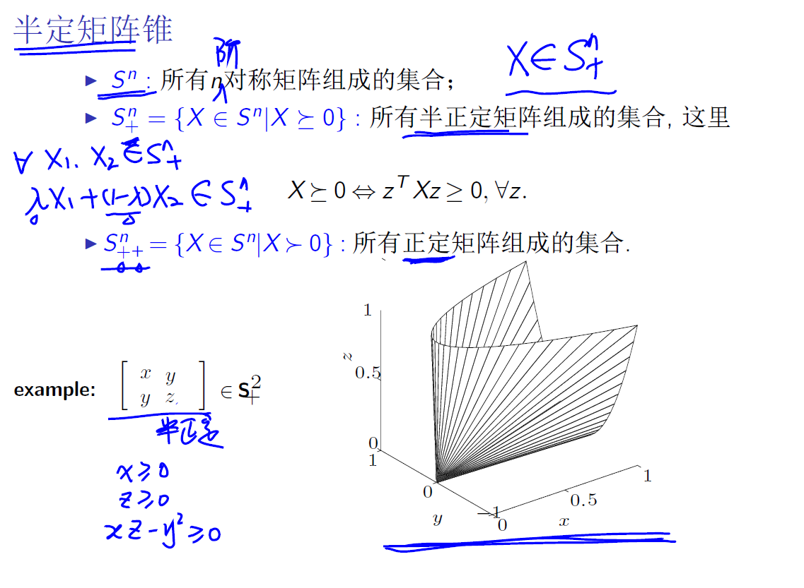

凸集是最优化理论中的重要概念，是凸优化理论的前置知识
如果目标函数是一个凸函数，可行集是一个凸集，那么这种优化问题可以视作是凸优化问题
为什么要研究凸优化
凸优化问题有一些比较好的性质
对凸函数来说，一定能找到最优解，平稳点就是最优解；非凸函数不能得到这种结论
可行集是凸集的话
凸集上最优点的充分必要条件是，该点的负梯度，与，任一点与该点的内积小于零（夹角大于90度）
非凸集上没有这种条件
综上，凸优化问题中可以有比较好的性质可以利用，可以设计有效的算法（如内点法）来解决凸优化问题
凸集的基本定义
对于任意的$x,y \in C$与任意的$\lambda \in [0,1]$有
集合两点的连线仍然属于集合
一些概念
有几种组合，线性、仿射、非负和凸组合，凸包是一种凸组合。凸包可以让非凸的集合填满，填成凸集合。
常见的凸集合
- 超平面
- 半空间
- 多面体
- 不等式和线性等式刻画的都是多面体
- 球体 Euclidean
椭球 Ellipsoid
- 注意矩阵的逆，P为正定矩阵，椭球的半轴是矩阵的特征值开根号
二阶锥 Second-order cone，ice-cream cone
- x是前n-1个元素，t是最后一个元素
半定矩阵锥

这个图形表示x，y，z满足上述公式的单的集合，半正定矩阵形成的集合
保持凸性的运算
交集可以保证凸性，并集不能保证。加减法也可以保证。
仿射变换保证凸性：
仿射变换是一种线性变换, 凸集仿射后得到的还是一个凸集
投影定理

点与凸集的分离
用超平面分离两个点，或者是两个闭凸集
一个超平面能够让整个闭凸集位于超平面的一侧
Farkas引理
给定矩阵$A_{m\times n}$和n维向量$c$，以下两个问题只存在一个解
如果把$A$看作是一个凸集内多个n维行向量的集合，则上述两个定理分别是让$c$位于凸集内和凸集外，在凸集外可以用点和凸集的分离定理来证明这个引理。
或者用画图的方式，大于小于零分别是向量夹角大于或者小于180度。画一画就看出来不可能同时有解。